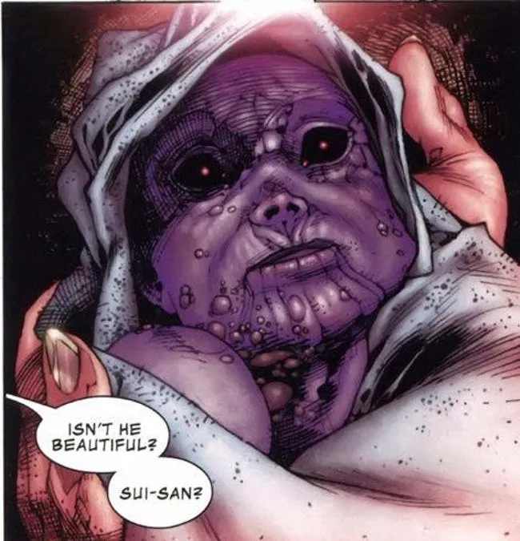
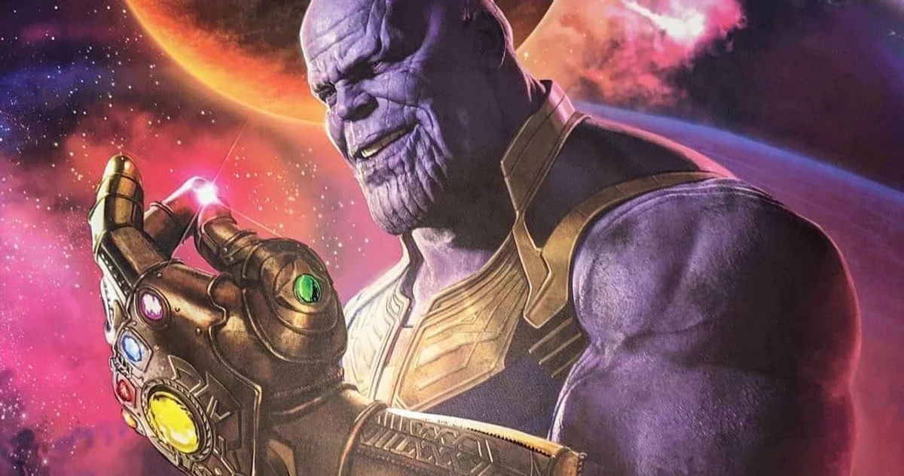
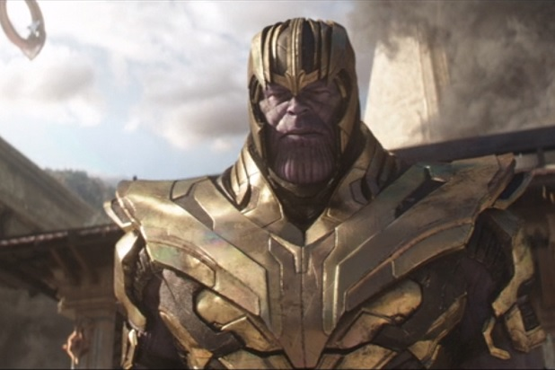

Thanos
Thanos is a fictional supervillain appearing in American comic books published by Marvel Comics. The character, created by writer/artist Jim Starlin, first appeared in The Invincible Iron Man #55 (cover dated February 1973). Thanos is one of the most powerful villains in the Marvel Universe and has clashed with many heroes including the Avengers, the Guardians of the Galaxy, the Fantastic Four, and the X-Men.

The character appears in the Marvel Cinematic Universe, portrayed by Damion Poitier in The Avengers (2012), and by Josh Brolin in Guardians of the Galaxy (2014), Avengers: Age of Ultron (2015), Avengers: Infinity War (2018), and Avengers: Endgame (2019) through voice and motion capture. The character has also appeared in various comic adaptations, including animated television series and video games.
Origin
Writer-artist Jim Starlin originally conceived of Thanos of Titan during college psychology classes. As Starlin described:
I went to college between doing U.S. military service and getting work in comics, and there was a psych class and I came up with Thanos ... and Drax the Destroyer, but I'm not sure how he fit into it, just anger management probably. So I came up to Marvel and asked if I wanted to do an issue of Iron Man. I felt that this may be my only chance ever to do a character, not having the confidence that my career was going to last anything longer than a few weeks. So they got jammed into it. Thanos was a much thinner character and Roy suggested beefing him up, so he's beefed up quite a bit from his original sketches ... and later on I liked beefing him up so much that he continued to grow in size.
Starlin has admitted the character's look was influenced by Jack Kirby's Darkseid:
Kirby had done the New Gods, which I thought was terrific. He was over at DC at the time. I came up with some things that were inspired by that. You'd think that Thanos was inspired by Darkseid, but that was not the case when I showed up. In my first Thanos drawings, if he looked like anybody, it was Metron. I had all these different gods and things I wanted to do, which became Thanos and the Titans. Roy took one look at the guy in the Metron-like chair and said: "Beef him up! If you're going to steal one of the New Gods, at least rip off Darkseid, the really good one!"
Fictional Character Biography
Thanos was born on Saturn's moon Titan as the son of Eternals A'lars and Sui-San; his brother is Eros of Titan. Thanos carries the Deviants gene, and as such, shares the physical appearance of the Eternals' cousin race. Shocked by his appearance and the belief that he would destroy all life in the universe, Sui-San attempted to kill him, but she was stopped by A'lars. During his school years, Thanos was a pacifist and would only play with his brother Eros and pets. By adolescence, Thanos had become fascinated with nihilism and death, worshipping and eventually falling in love with the physical embodiment of death, Mistress Death. As an adult, Thanos augmented his physical strength and powers through his superior scientific knowledge. He also attempted to create a new life for himself by siring many children as well as becoming a pirate. He finds no fulfillment in either until he is visited again by Mistress Death, for whom he murders his offspring and his pirate captain.
Cosmic Cube and Infinity Gems
Wishing to impress Mistress Death, Thanos gathers an army of villainous aliens and begins a nuclear bombardment of Titan that kills millions of his race. Seeking universal power in the form of the Cosmic Cube, Thanos travels to Earth. Prior to landing, his vessel destroys a nearby car as a family witnesses his arrival. Unbeknownst to Thanos, two of the family members in the vehicle survive: the father's spirit is preserved by the Titanian cosmic entity Kronos and is given a new form as Drax the Destroyer while the daughter is found by Thanos' father, Mentor, and is raised to become the heroine Moondragon. Thanos eventually locates the Cube, and also attracts the attention of Mistress Death. Willing the Cube to make him omnipotent, Thanos then discards the Cube. He imprisons Kronos and taunts Kree hero Captain Marvel, who, with the aid of superhero team the Avengers and ISAAC (a super-computer based on Titan), is eventually able to defeat Thanos by destroying the Cube.
Thanos later comes to the aid of Adam Warlock in a war against the Magus and his religious empire. During this alliance Thanos cultivates a plan to reunite with Mistress Death, and secretly siphons off the energies of Warlock's Soul Gem, combining these with the power of the other Infinity Gems to create a weapon capable of destroying a star. Warlock summons the Avengers and Captain Marvel to stop Thanos, although the plan is foiled when Thanos kills Warlock. The Titan regroups and captures the heroes, who are freed by Spider-Man and the Thing. Thanos is finally stopped by Warlock, whose spirit emerges from the Soul Gem and turns the Titan to stone. Thanos's spirit eventually reappears to accompany a dying Captain Marvel's soul into the realm of Death.
The Infinity saga
Thanos is eventually resurrected, and collects the Infinity Gems once again. He uses the gems to create the Infinity Gauntlet, making himself omnipotent, and erases half the living things in the universe to prove his love to Death. This act and several other acts are soon undone by Nebula and Adam Warlock. Warlock reveals that Thanos has always allowed himself to be defeated because the Titan secretly knows he is not worthy of ultimate power. Thanos joins Warlock as part of the Infinity Watch and helps him to defeat first his evil and then good personas, and cure Thor of "warrior Madness".
Annihilation
During the Annihilation War Thanos allies himself with the genocidal villain Annihilus. When the Annihilation Wave destroys the Kyln, Thanos sends the Fallen to check on the status of the Beyonder, whose mortal form he finds has perished. Before the Fallen can report back to Thanos it encounters Tenebrous and Aegis: two of Galactus's ancient foes. Thanos convinces Tenebrous and Aegis to join the Annihilation Wave in order to get revenge on Galactus, and they subsequently defeat the World Devourer and the Silver Surfer. Annihilus desires the secret of the Power Cosmic and asks Thanos to study Galactus. Once Thanos learns Annihilus's true goal is to use the Power Cosmic to destroy all life and remain the sole survivor, he decides to free Galactus. Drax the Destroyer kills Thanos before he can do so but discovers that Thanos had placed a failsafe device to allow Silver Surfer to free Galactus in the event that Annihilus betrayed him. During a climactic battle with Annihilus, Nova is near death and sees Thanos standing with Mistress Death.
The Thanos Imperative
A cocoon protected by the Universal Church of Truth is revealed to be hiding Thanos, who has been chosen by Oblivion to be the new Avatar of Death. Resurrected before his mind could be fully formed, Thanos goes on a mindless rampage before being captured by the Guardians of the Galaxy. Thanos pretends to aid the Guardians against the invading Cancerverse, and after discovering its origin kills an alternate version of Mar-Vell, the self-proclaimed Avatar of Life. This causes the collapse of the Cancerverse, and Nova sacrifices himself in an attempt to contain Thanos inside the imploding reality. Thanos escapes and returns to Earth seeking an artificial cosmic cube. He forms an incarnation of the criminal group Zodiac to retrieve it, but he is defeated by the Avengers and the Guardians of the Galaxy and remanded to the custody of the Elders of the Universe.
Infinity
Thanos soon invades Earth again after being informed that most of the Avengers have temporarily left the planet. He launches an assault on Attilan, which he offers to spare in exchange for the deaths of all Inhumans between the ages of 16 and 22. Black Bolt later informs the Illuminati that the true purpose of the invasion is to find and kill Thane, an Eternal/Inhuman hybrid that Thanos had secretly fathered years earlier. Thanos is trapped in a pocket limbo of stasis by his son. Thanos is freed by Namor and was among the villains that joined his Cabal to destroy other worlds. Thanos later meets his end on Battleworld, where he is easily killed by God Emperor Doom during an attempted insurrection.
Ultimates and Civil War II
Thanos is unintentionally brought back to life by Galactus. When Thanos prepares to raid a Project Pegasus facility to steal a Cosmic Cube, he is ambushed and defeated by a team of Avengers. During their battle, he mortally wounds War Machine and critically injures She-Hulk. After his defeat, he is imprisoned in the Triskelion, and manipulates Anti-Man into facilitating his escape. Thanos goes on a killing spree, but Black Panther, Blue Marvel and Monica Rambeau are able to stop him by devising a device that blocks the electrical synapses in his brain.
Thanos Returns
Thanos somehow later recovers and escapes captivity, and reclaims his Black Order forces from Corvus Glaive. After retaking command of his Black Quadrant outpost, Thanos discovers that he is dying. Thanos tries to force Mentor to find a cure for his malady, but kills him when he is unable to. Soon after Thanos would be battered and detained by the Shi'ar Imperial Guard after he invaded the very planet station of his father's facility sitting in their territory. A quick jump into the future shows Thanos' estranged son Thane having bested his mad father with the personification of death at his side.
The Unworthy Thor
Around the time of the New Thor's appearance, Thanos is approached by a mysterious hooded woman, who proposes an alliance. He tasks her with bringing him the hammer of the deceased Ultimate Thor. The woman fails, but removes her disguise to reveal herself as Hela, the Norse goddess of death. She tells Thanos that she needs his help to reclaim Hel, and in exchange, offers to give him the one thing he has been searching for his entire life: death. After this, the two kiss.
Thanos Wins
Some time after his battle with Thane, Thanos travels to the Chitauri homeworld. However, upon subjugating the planet, he is attacked by a being identified only as The Rider, who captures Thanos and uses a piece of the fractured Time Stone to bring Thanos millions of years into the future, where he encounters an elderly version of himself who has destroyed nearly all life in the universe. At first, Thanos believes it to be some sort of trick, but is convinced once the future Thanos utters the name Dione, which Thanos's mother had planned to name him before she went insane. King Thanos reveals he needs his younger self's assistance to defeat the Fallen One, the last being left in the Universe, so that he may finally reunite with Death.
Infinity Wars
During the "Infinity Wars" storyline, Thanos later discovers that the Infinity Stones are being collected once again and begins plotting to reassemble his gauntlet. However, he is assaulted by Requiem, whom he apparently recognizes, and is quickly killed. She then destroys the Infinity Gauntlet and also commands the Chitauri loyal to Thanos to die.
Powers and abilities
Thanos is a mutant member of the race of superhumans known as the Titanian Eternals. The character possesses abilities common to the Eternals, but amplified to a higher degree through a combination of his mutant–Eternal heritage, bionic amplification, mysticism, and power bestowed by the abstract entity, Death. Demonstrating enormous superhuman strength, speed, stamina, immortality and invulnerability among other qualities, Thanos can absorb and project vast quantities of cosmic energy, and is capable of telekinesis and telepathy. He can manipulate matter and live indefinitely without food, air or water, cannot die of old age, is immune to all terrestrial diseases, and has high resistance to psychic assaults. Thanos is also an accomplished hand-to-hand combatant, having been trained in the art of war on Titan.
Thanos has proven himself capable of briefly holding his own in battle against Odin, and of blasting Galactus off his feet.
Thanos is a supergenius in virtually all known fields of advanced science and has created technology far exceeding that which is found on contemporary Earth. He often employs a transportation chair capable of space flight, force field projection, teleportation, time travel, and movement through alternate universes. Thanos is also a master strategist and uses several space vessels, at least three under the name "Sanctuary", as a base of operations.